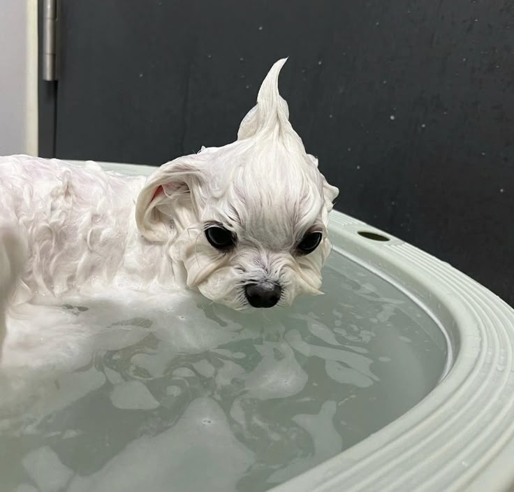
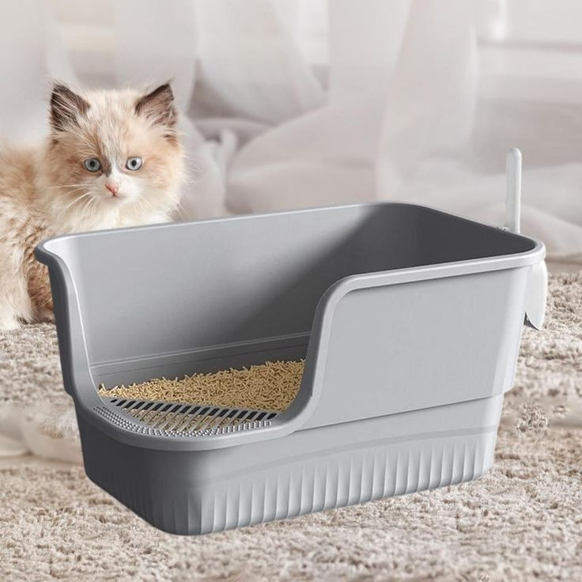
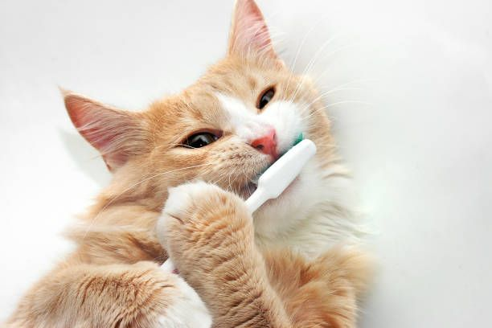
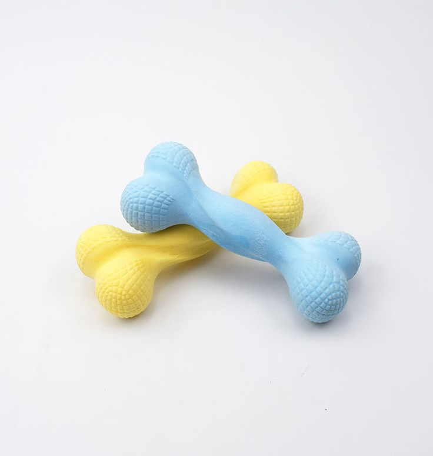
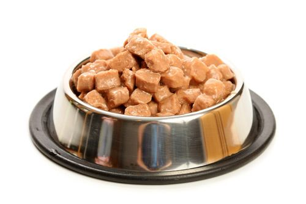
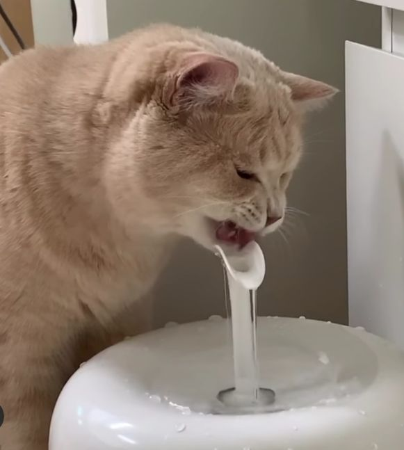

เกร็ดความรู้สำหรับสัตว์เลี้ยง 🐶🐱
รวมความรู้ดี ๆ ที่ช่วยให้เจ้าของดูแลสัตว์เลี้ยงได้อย่างมีคุณภาพ

🐕 อาบน้ำหมาบ่อยแค่ไหน?
สุนัขควรอาบน้ำทุก 1–2 สัปดาห์ ขึ้นอยู่กับสภาพผิว หนัง ปริมาณเหงื่อ
และสายพันธุ์ หากอาบบ่อยเกินไปอาจทำให้ผิวแห้ง ระคายเคืองได้

🐱 กลิ่นกระบะทรายแมวลดได้อย่างไร?
ควรตักของเสียออกวันละ 1–2 ครั้ง และเปลี่ยนทรายใหม่ทุก 5–7 วัน
รวมถึงทำความสะอาดกระบะด้วยน้ำสบู่อ่อน ๆ เป็นประจำเพื่อลดแบคทีเรีย

🦷 แปรงฟันสัตว์เลี้ยงสำคัญแค่ไหน?
การแปรงฟันช่วยลดหินปูนและกลิ่นปาก ควรทำสัปดาห์ละ 2–3 ครั้ง
หรือใช้อุปกรณ์เสริม เช่น ยาสีฟันสัตว์เลี้ยง เจลลดคราบ

🎾 ของเล่นช่วยลดความเครียดได้
สุนัขและแมวต้องการการกระตุ้นสมอง ของเล่นช่วยลดความเครียด
ป้องกันพฤติกรรมทำลายข้าวของ และทำให้สัตว์สนุกสนานมากขึ้น

🍽️ ให้อาหารอย่างเหมาะสม
เลือกอาหารตามช่วงวัยและน้ำหนัก ควรให้อาหารตรงเวลา
และหลีกเลี่ยงขนมปริมาณมากเพราะอาจทำให้อ้วนง่าย

💧 น้ำสำคัญกว่าที่คิด!
สัตว์เลี้ยงควรมีน้ำสะอาดให้ดื่มตลอดเวลา เพราะการขาดน้ำทำให้เกิดปัญหาสุขภาพ
เช่น ภาวะไตทำงานหนัก ขนร่วง และอ่อนเพลีย ควรเปลี่ยนน้ำทุกวัน
และใช้ชามน้ำที่ทำความสะอาดง่ายเพื่อลดเชื้อโรค